Astraea commercial-grade design research — reference atlas
Local research use only. Images are vendor/product screenshots archived
by the research lanes with attribution in each study's evidence register; no
republication permission is assumed. Method labels: OD = official documented,
OS = observed screenshot, VR = vendor-reported, PR = practitioner-reported.
Start with synthesis.md , then the lane studies.
Studies and review
CAD / configuration (OS unless noted)
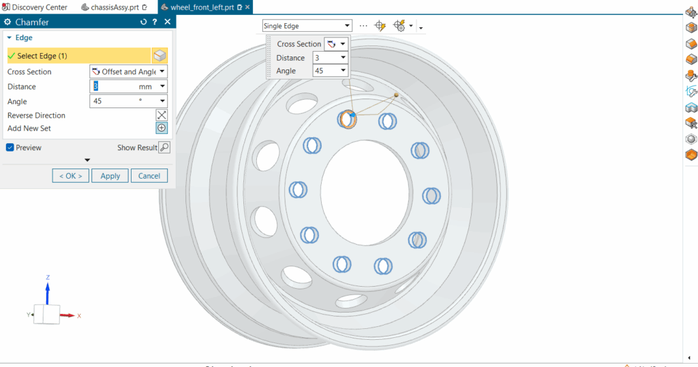
NX chamfer: orange active edge vs blue predicted candidates; dialog + cursor popup (FIG-2). 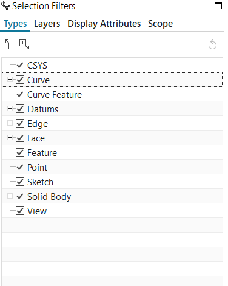
NX Selection Filters: type tree + Scope tab (FIG-1). 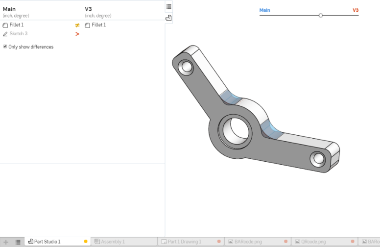
Onshape Compare: blue/red base-target, difference list, blend slider (FIG-4). 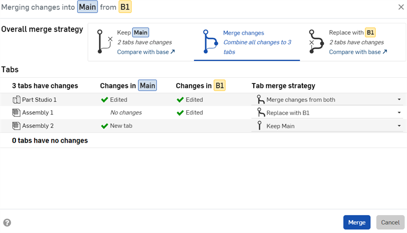
Onshape merge: Keep/Merge/Replace per tab (FIG-5). 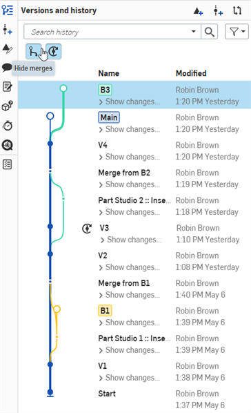
Onshape versions graph: branches, merge lines, dot semantics (FIG-6). 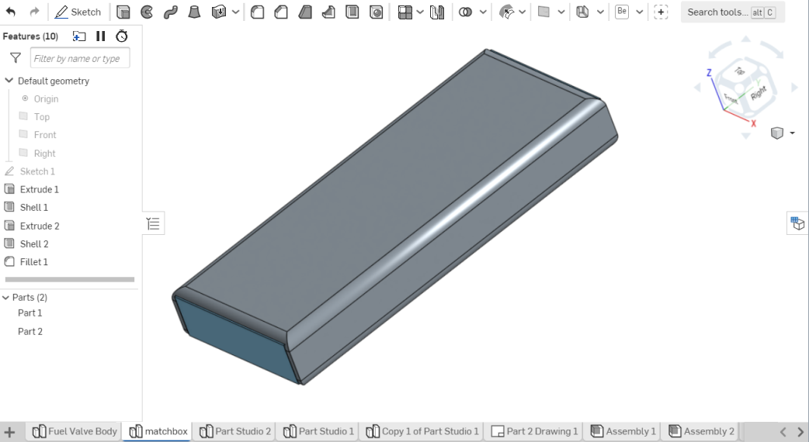
Onshape Part Studio: feature list + rollback bar (FIG-3).
Simulation / mission analysis
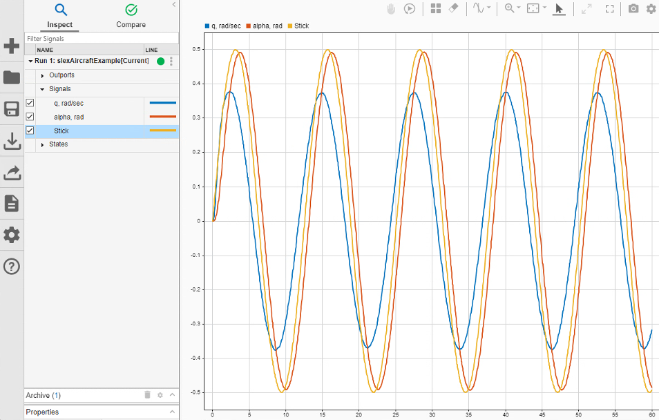
SDI Inspect: signal table as index, plot as surface, archive bucket. 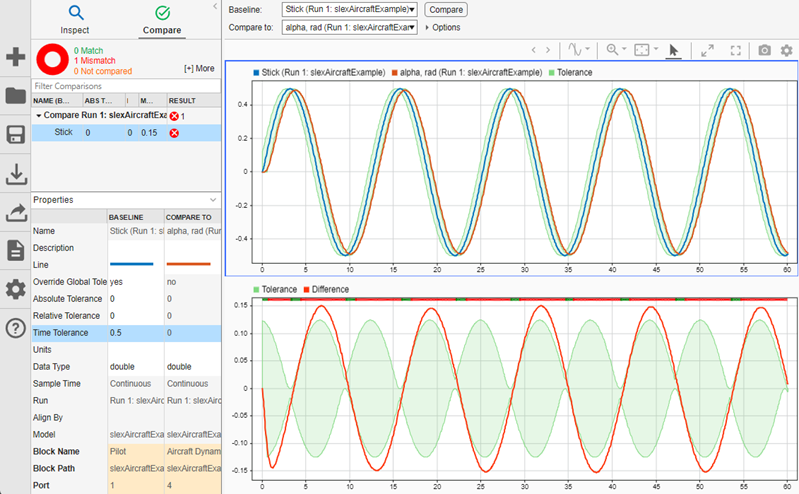
SDI Compare: band + signed difference + pass/fail strip + baseline/compare properties. 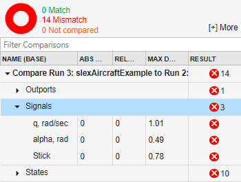
SDI run compare: match/mismatch counts, per-signal ABS/REL/MAX D. 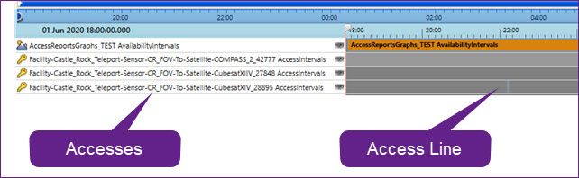
STK Timeline: availability vs access rows on a shared ruler. 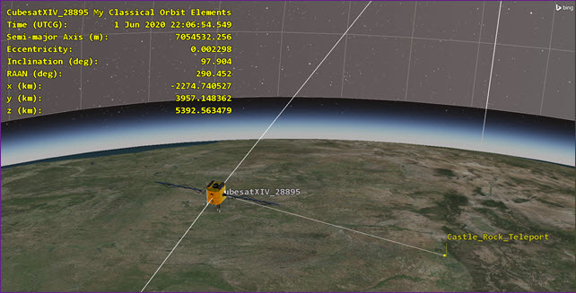
STK 3D data display: in-scene values with inline units.
Operational analytics
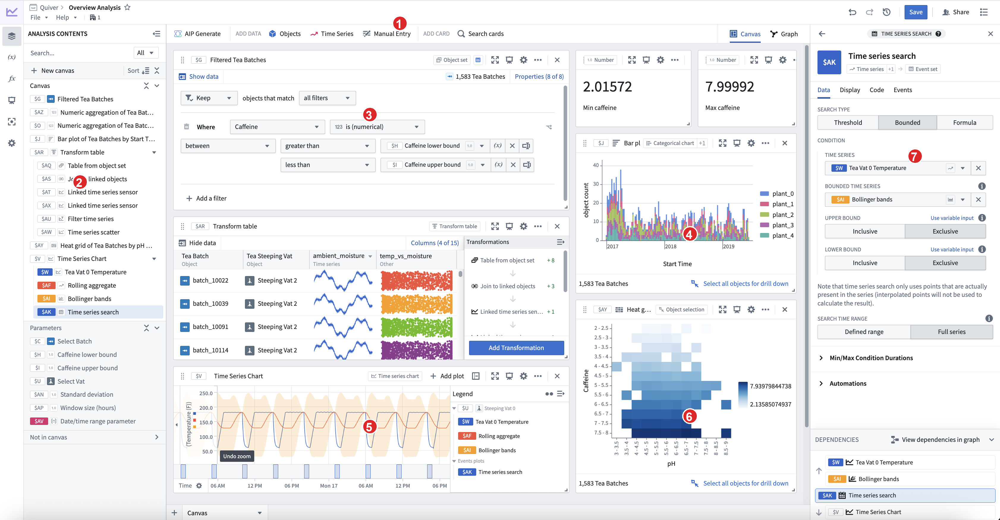
Quiver canvas: typed filter cards, parameters, drill-down footers. 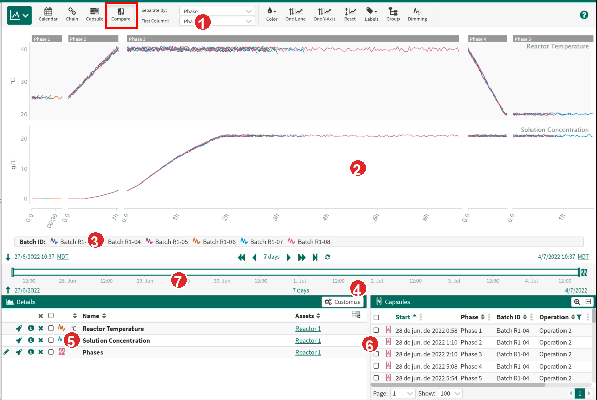
Seeq Compare: capsule-relative time, per-lane axes, dimming. 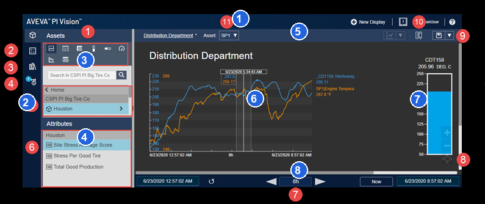
PI Vision: asset panes, trend, gauge, one timebar (red = vendor callouts, blue = lane). 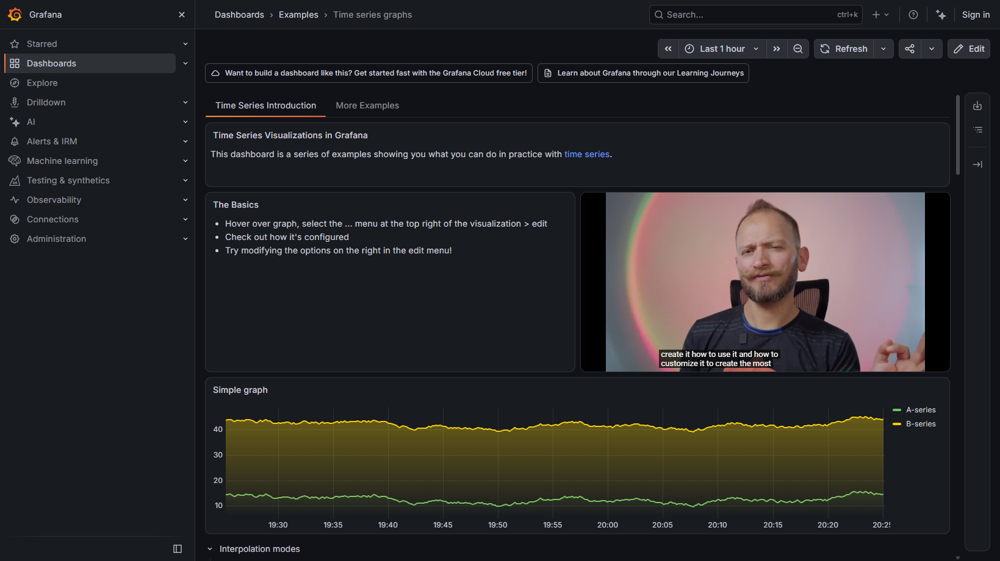
Grafana Play (live capture): header time picker, URL-synced variables. 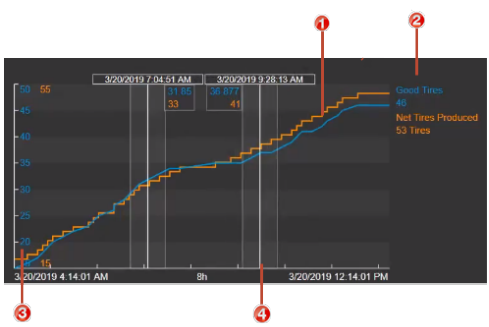
PI Vision synchronized trend cursors with per-trace readouts.
Running Astraea audit (main d79dbe8)
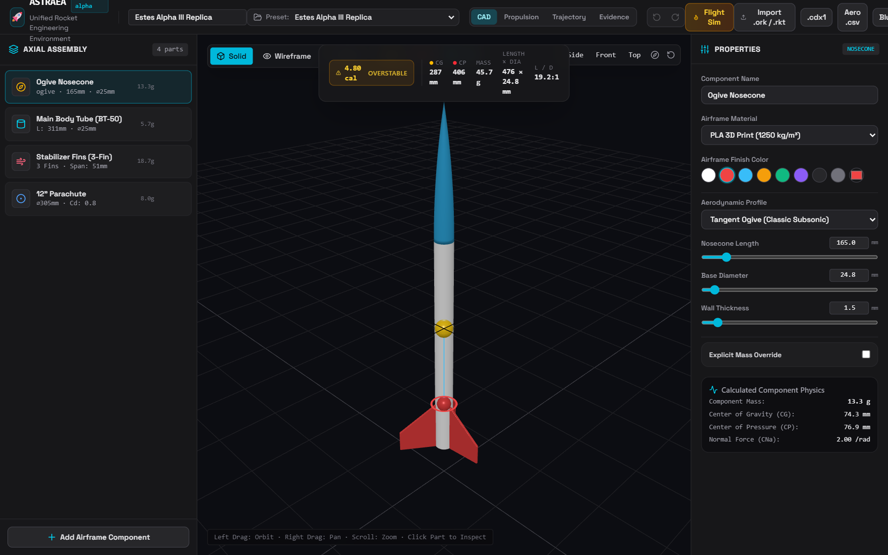
Default Alpha workstation: header, assembly tree, canvas, HUD, inspector. 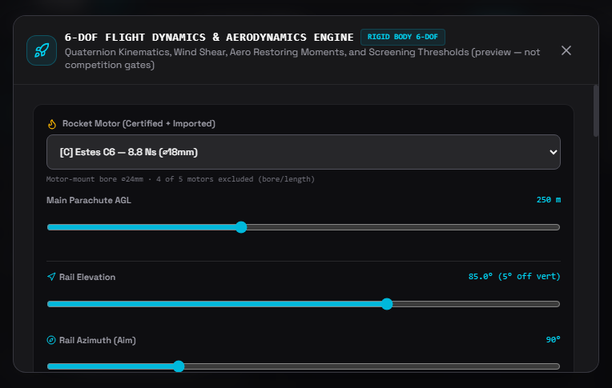
6-DOF run: CURRENT badge, manifest, KPIs. 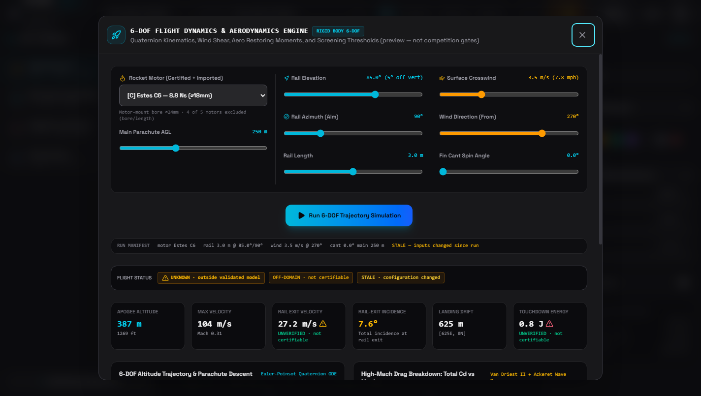
After rail-length edit: STALE badges in manifest + flight status (re-captured, AUD-R1). 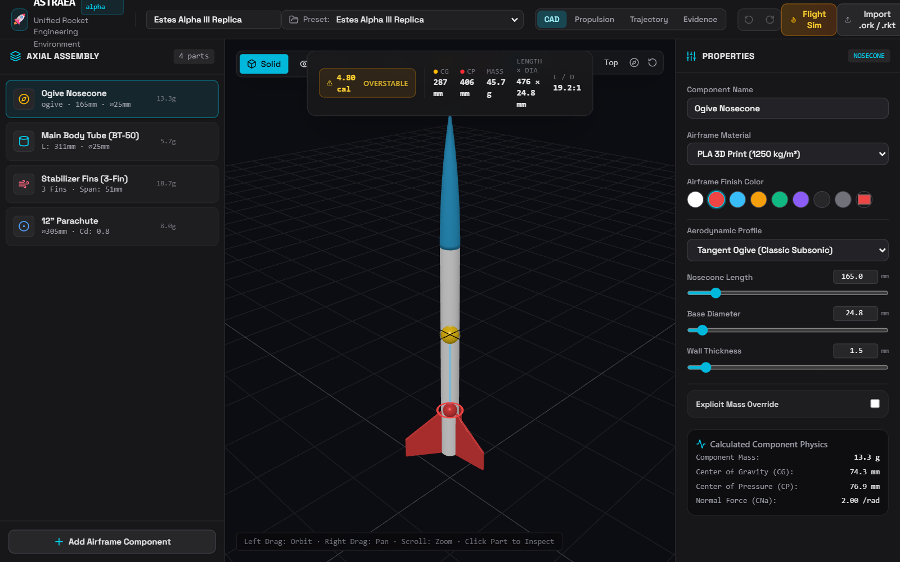
Compact 1280×800: no overflow, header truncates. 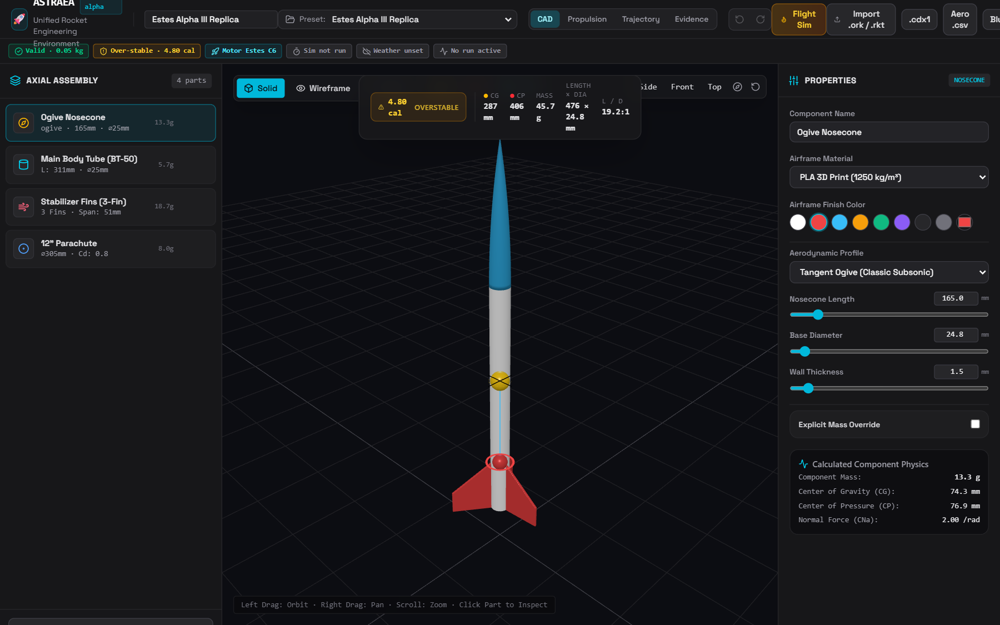
Frontend worktree delta: mission status rail (absent on main).